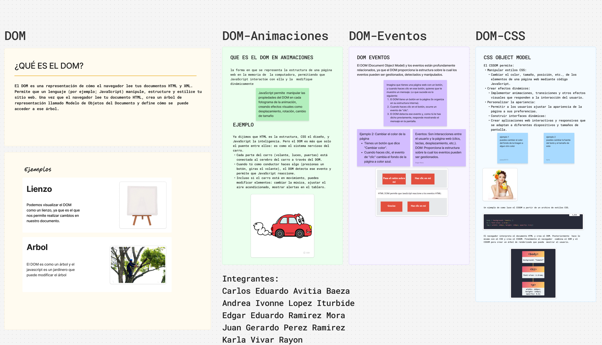
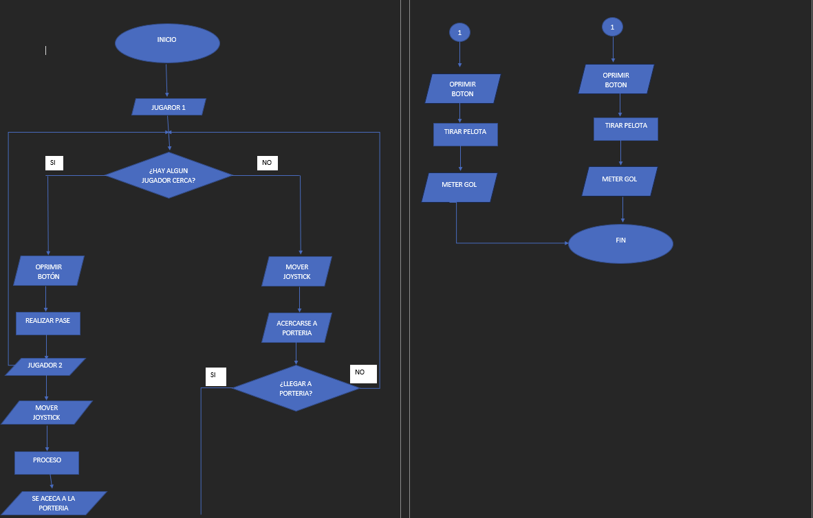

Actividad 1
Fecha: 06/08/2025
Nombre: Juan Gerardo Perez Ramirez

Actividad 2: DOM
Fecha: 15/08/2025
Nombre: Juan Gerardo Perez Ramirez

Actividad 3: Unidades de medidas estaticas y relativas.
Fecha: 29/08/2025
Nombre: Juan Gerardo Perez Ramirez
Enlaces de figma
https://www.figma.com/board/laFGK6g4uo6EC8ICdcsqdG/Untitled?node-id=0-1&t=Z2JibnkeHiWMdna9-1
Diagrama de flujo

Medidas estaticas
Las "medidas estáticas" en HTML se refieren a las unidades absolutas que se utilizan en CSS para definir el tamaño de los elementos de forma fija, independiente del dispositivo o contexto del usuario, como los píxeles (px), centímetros (cm), o pulgadas (in). Aunque HTML en sí mismo no tiene "medidas estáticas", sus elementos se pueden estilizar con estas unidades absolutas para fijar su tamaño.
Ejemplos de unidades absolutas (medidas estáticas):
- px (Píxeles): La unidad más común y, para muchos propósitos, la más práctica para el desarrollo web, representando puntos en la pantalla.
- cm (Centímetros): Una unidad de longitud física.
- in (Pulgadas): Otra unidad de longitud física, comúnmente usada para impresión.
- mm (Milímetros): Una unidad de longitud física.
- pt (Puntos): Un punto es 1/72 de una pulgada.
- pc (Picas): Una pica es 1/6 de una pulgada.
Las medidas relativas en HTML y CSS son valores que se definen en función de otra unidad de medida, permitiendo que los diseños sean más flexibles y se adapten a diferentes dispositivos y tamaños de pantalla. Se dividen en unidades relativas a la tipografía (como %, em, rem, ex) y unidades relativas al viewport (como vw, vh, vmin, vmax).
Unidades relativas a la tipografía Estas unidades se basan en propiedades de la tipografía, como el tamaño de fuente o el ancho de caracteres.
- % (porcentaje): La medida es relativa al tamaño del elemento padre.
- em: Relativa al tamaño de fuente del elemento mismo.
- rem (root em): Relativa al tamaño de la fuente del elemento raíz (el elemento ).
- ex: Relativa a la altura del carácter "x" minúscula del elemento.
- ch: Relativa al ancho del glifo "0" de la fuente.
- lh: Relativa a la altura de la línea del elemento.
Imagenes sobre la conferencia de la IA

.jpeg)

Actividad 4: significados.
Fecha: 03/09/2025
Nombre: Juan Gerardo Perez Ramirez
Color animation
Uso del color como herramienta narrativa y emocional en la animación, donde se aplica la teoría del color y el simbolismo para transmitir la atmósfera, el estado de ánimo de los personajes y la profundidad de la historia al espectador. Herramientas como el color script o guion de color son utilizadas para planificar y visualizar cómo los colores se usarán a lo largo de la animación para guiar las emociones del público.
Delay
Permite pausar o postergar la ejecución de una acción o el inicio de un efecto visual por un período de tiempo específico, medido comúnmente en milisegundos o segundos.
Animation-timing-function
Define el ritmo o la curva de velocidad de una animación, determinando cómo se mueven los fotogramas a lo largo de la duración de un ciclo. Esta función no afecta la duración total, sino la aceleración o desaceleración entre los fotogramas clave, y acepta valores como ease (el predeterminado), linear, ease-in, ease-out, ease-in-out, o funciones personalizadas como cubic-bezier().
Animation-direction
Propiedad CSS que determina la dirección en la que se reproduce una animación, permitiendo que la secuencia se ejecute hacia adelante (normal), hacia atrás (reverse), o que alterne entre la dirección normal e inversa (alternate, alternate-reverse) en cada ciclo. Aunque se menciona en el contexto de HTML porque se aplica a elementos HTML, su definición y uso son exclusivamente con CSS.
Animation-fill-mode
Define los estilos que un elemento HTML debe adoptar antes de que comience la animación y/o después de que termine. Sus valores más comunes son: none (predeterminado, no cambia estilos), forwards (conserva el estilo del último fotograma clave), backwards (aplica el estilo del primer fotograma clave durante el retraso), y both (aplica estilos tanto antes como después de la animación).
Es un término estadístico para el promedio de un conjunto de números, calculado al sumar todos los valores y dividirlos por la cantidad de valores.
Se utiliza para identificar el centro o la tendencia general de los datos, aunque es sensible a valores extremos.
Proyecto sobre la IA
Tema: solución para arreglar el problema del sonido.
Durante la conferencia sobre Inteligencia Artificial, se identificaron diversos problemas logísticos, siendo dos de los más notorios el espacio utilizado —el gimnasio— y, especialmente, la deficiencia en la calidad del sonido.:
Este último aspecto resultó ser el más crítico, ya que, debido a la gran cantidad de asistentes, la conversación principal del evento se volvió difícil de seguir. Las causas principales fueron, por un lado, la limitada calidad del sistema de sonido, y por otro, el constante murmullo del público, lo que generó un ambiente ruidoso e impidió que muchos participantes pudieran escuchar adecuadamente el contenido presentado.
Ante esta situación, me gustaría compartir algunas propuestas que podrían implementarse en futuras ediciones del evento para mejorar significativamente la experiencia auditiva de los asistentes:
- Desarrollo de una plataforma web de transmisión de audio:
Se podría crear una página web específica para el evento, de modo que, al momento de registrar la asistencia, cada participante pudiera acceder a una transmisión en vivo del audio. Esto permitiría que los asistentes escuchen la conferencia desde sus dispositivos móviles, utilizando audífonos o el altavoz de su teléfono, evitando así la dependencia exclusiva del sistema de sonido del lugar. - Uso de inteligencia artificial para la retransmisión o resumen de contenidos:
Otra alternativa sería implementar herramientas de inteligencia artificial que capten el audio en tiempo real y lo retransmitan con mayor claridad, o bien, que generen resúmenes en vivo del contenido que se está presentando, lo cual facilitaría la comprensión del evento incluso en ambientes ruidosos.
Aplicaciones y soluciones las cuales pueden ayudar
- Krisp, que elimina ruidos de fondo en tiempo real.
- NVIDIA Broadcast, que utiliza inteligencia artificial para limpiar el audio y reducir el eco.
- Zoom y Microsoft Teams, que incluyen supresión avanzada de ruido en sus transmisiones.
- Y, de manera más especializada, Sennheiser MobileConnect y Listen EVERYWHERE, que permiten transmitir el audio de la conferencia directamente al dispositivo móvil de cada asistente, garantizando una experiencia auditiva mucho más clara.